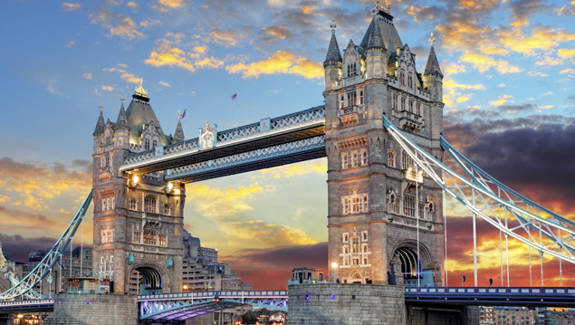
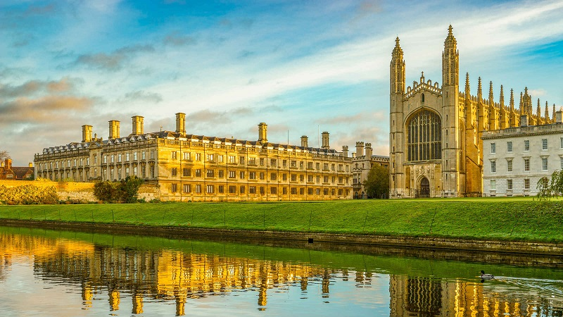
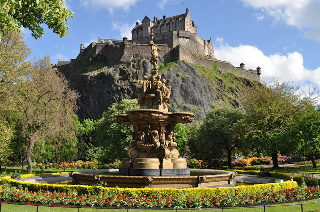
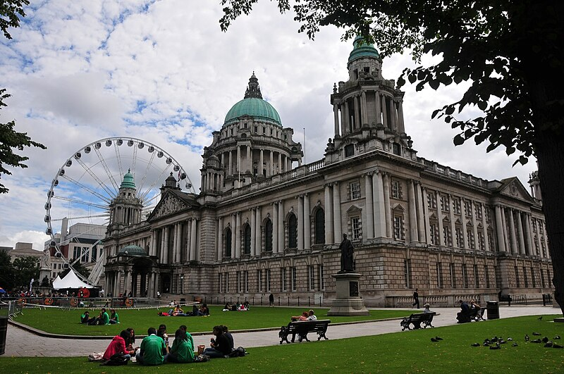
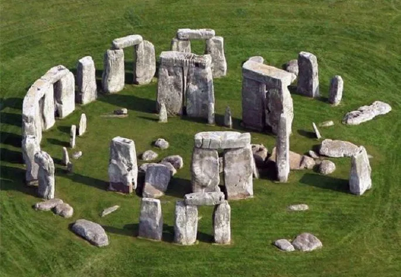
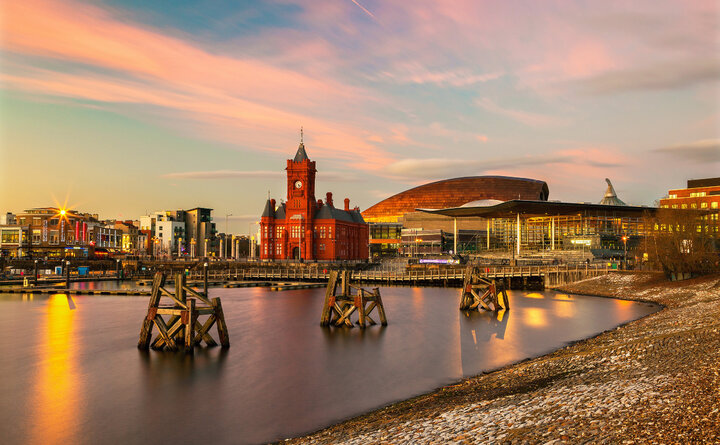
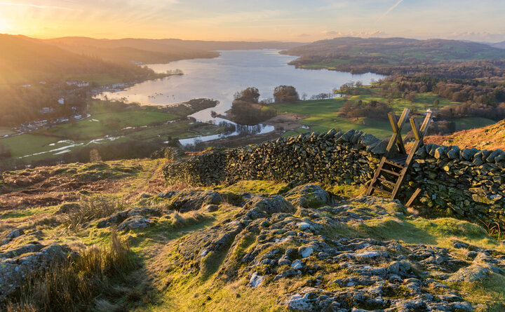

Turismo
As possibilidades de turismo são as mais variadas possíveis no Reino Unido. Com opções de transporte ferroviário rápido e de qualidade e passagens aéreas baratas de companhias aéreas low cost, é possível chegar em diferentes destinos em poucas horas.
Londres

- Londres: A capital da Inglaterra, com pontos turísticos como o Big Ben, a Torre de Londres, o Palácio de Buckingham, Hyde Park, Piccadilly Circus e o Museu de História Natural.
Cambridge

-
Cambridge: Uma cidade conhecida por abrigar uma das melhores universidades do mundo, com passeios de barcos e pubs locais.
Edimburgo

-
Edimburgo:Capital da Escócia, famoso pelo seu imponente castelo Edimburgo
Belfast

-
Belfast: é a Capital da Irlandia do Norte, local da fabricação do famoso Titanic.
Stonehenge

-
Stonehenge: é sem dúvida um dos monumentos mais famosos, além de sua construção ser um mistério até hoje.
Cardiff

-
Cardiff: Capital do país de Gales, lar de vários castelos e ruínas romanas antigas.
Lake Distric

-
Lake District: é o parque mais famoso do Reino Unido, suas paisagens atraem visitantes de várias partes do mundo.